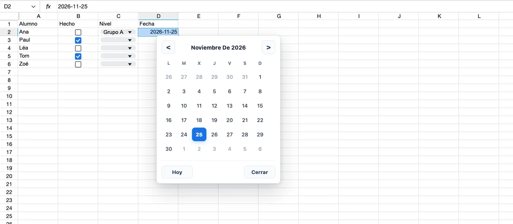

Casillas, listas y calendario

Casillas
Seleccionar las celdas, Insertar › Casilla de verificación. Un clic marca o desmarca; la celda vale TRUE o FALSE.
=SI(B2; "hecho"; "por hacer")
=SUMA.PRODUCTO(B2:B6; C2:C6)
=SUMA.PRODUCTO(B2:B6; B2:B6)La segunda fórmula suma los valores de la columna C cuya casilla está marcada; la tercera cuenta las casillas marcadas.
Listas desplegables
Seleccionar las celdas, Insertar › Lista desplegable….
| Origen | Contenido |
|---|---|
| Valores | las opciones, una por campo; Añadir opción; sin coma |
| Desde un rango | un rango cuyas celdas son las opciones: Hoja2!$A$1:$A$10 |
Un rango sin $ se desplaza de una celda a otra, como una fórmula rellenada. Si sus celdas cambian, las opciones las siguen.
La celda muestra una flecha; un clic abre las opciones. No se acepta un valor distinto de los de la lista.
Calendario
Un doble clic en una celda de fecha abre un calendario: elegir un día, cambiar de mes con < y >, Hoy para la fecha de hoy. Se abre en toda celda con formato de fecha, aunque esté vacía, salvo si contiene una fórmula o está bloqueada.
Para una columna de fechas que se rellenará con el calendario: seleccionarla y darle el formato Fecha.
Retirar
Supr retira la casilla o la lista de la celda, con su valor.
Casillas y listas se guardan en el archivo de Excel; allí las casillas son casillas de Excel.